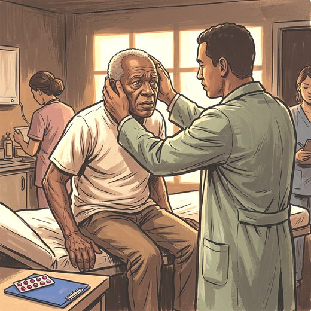

Consulta rápida à beira do leito
Condutas, doses e interações.
Referências da aula · 8
- Cox H, Frith J. Best practice assessment and management of benign paroxysmal positional vertigo in older adults. Age Ageing. 2025;54(8):afaf225. doi:10.1093/ageing/afaf225.DOI
- Bhattacharyya N, Gubbels SP, Schwartz SR, et al. Clinical practice guideline: benign paroxysmal positional vertigo (update). Otolaryngol Head Neck Surg. 2017;156(3 Suppl):S1-47. PMID 28248609. doi:10.1177/0194599816689667.PubMedDOI
- Hall CD, Herdman SJ, Whitney SL, et al. Vestibular rehabilitation for peripheral vestibular hypofunction: an updated clinical practice guideline from the Academy of Neurologic Physical Therapy of the American Physical Therapy Association. J Neurol Phys Ther. 2022;46(2):118-77. PMID 34864777. doi:10.1097/NPT.0000000000000382.PubMedDOI
- Edlow JA, Gurley KL, Newman-Toker DE, et al. Guidelines for reasonable and appropriate care in the emergency department 3 (GRACE-3): acute dizziness and vertigo in the emergency department. Acad Emerg Med. 2023;30(5):442-86. PMID 37166022. doi:10.1111/acem.14728.PubMedDOI
- 2023 American Geriatrics Society Beers Criteria® Update Expert Panel. American Geriatrics Society 2023 updated AGS Beers Criteria® for potentially inappropriate medication use in older adults. J Am Geriatr Soc. 2023;71(7):2052-81. PMID 37139824. doi:10.1111/jgs.18372.PubMedDOI
- Montero-Odasso M, van der Velde N, Martin FC, et al. World guidelines for falls prevention and management for older adults: a global initiative. Age Ageing. 2022;51(9):afac205. PMID 36178003. doi:10.1093/ageing/afac205.PubMedDOI
- von Brevern M, Bertholon P, Brandt T, et al. Benign paroxysmal positional vertigo: diagnostic criteria. J Vestib Res. 2015;25(3-4):105-17. PMID 26756126. doi:10.3233/VES-150553.PubMedDOI
- Agrawal Y, Van de Berg R, Wuyts F, et al. Presbyvestibulopathy: diagnostic criteria consensus document of the classification committee of the Bárány Society. J Vestib Res. 2019;29(4):161-70. PMID 31306146. doi:10.3233/VES-190672.PubMedDOI